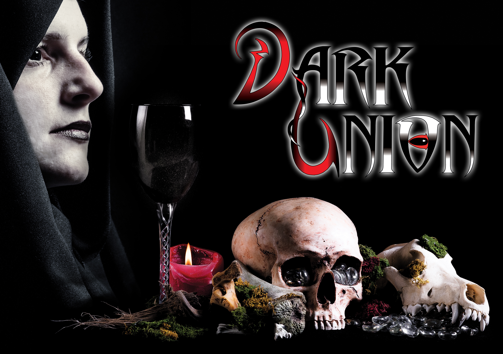

nieuws
De ticketverkoop voor live 2 is geopend!
Ga naar de ticketshop om jou ticket te kopen!
De datum live 2:
27 t/m 29 oktober 2017
Locatie:
Scoutingcentrum Buitenzorg te Baarn
Aankomende evenementen
Live 2: 27 t/m 29 oktober 2017, scoutingcentrum Buitenzorg te Baarn.
Bardag 2: datum: onbekend, locatie: onbekend
Live 3: 16 t/m 18 november 2018, Groepsaccommodatie Ahoy te Oosterhout
Home
Welkom op de website van Dark Union.
Dark Union is een larp-evenement dat wordt georganiseerd door het bedrijf Layers.
Met dit nieuwe evenement bieden wij de deelnemers de mogelijkheid om het eens helemaal anders te doen. Als speler ben je niet de held die de wereld redt van de ondergang, of de paladijn die de dame in nood redt. Nee, de spelers zijn namelijk de snoodaards, de evil bad guys en de underdogs. En de NPC’s? Die spelen juist de rollen van de voorgenoemde helden!
Speciaal voor deze omgekeerde wereld is een regelboek geschreven die aanvulling biedt voor deze kwaadaardige meester-breinen.
Heb jij altijd al eens echt de kwaadaardige meester willen spelen, of juist de kwaadaardige handlanger? Kom dan naar Dark Union! Op deze website is alle informatie over de setting, rassen, het regelboek en aanvullende informatie te vinden. En uiteraard ook de links en gegevens om je in te schrijven en er bij te zijn!
We zien je graag op de wereld van Noroi!
Een (duistere) groet,
Alexandra,
Organisator van Dark Union, eigenaar van Layers.
Dark Union wordt georganiseerd door:
Volg ons op Facebook